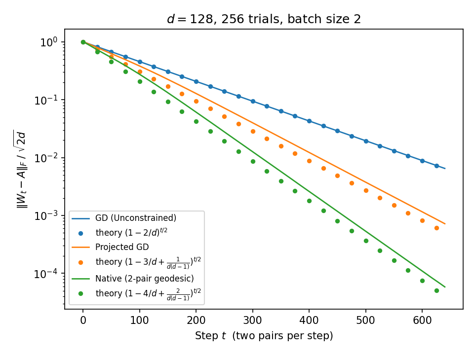
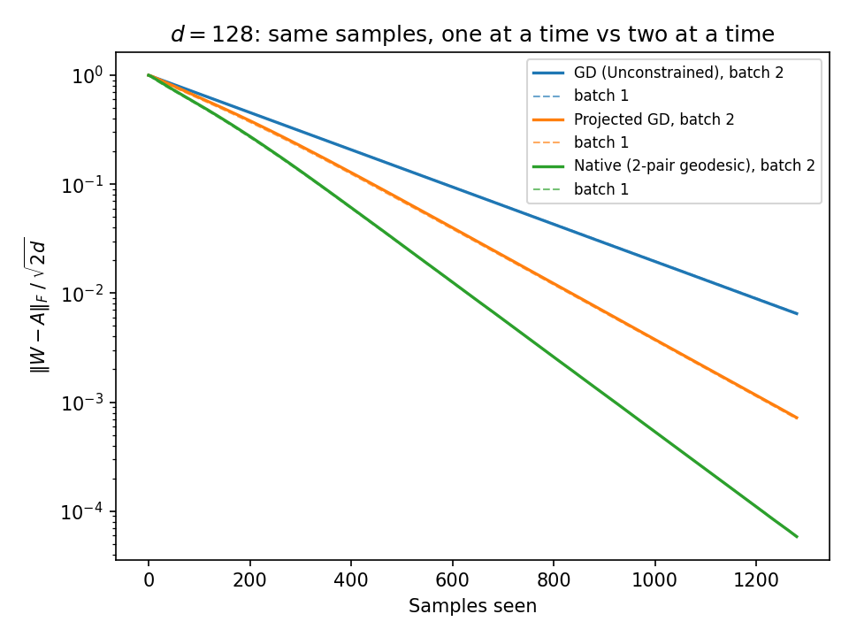

Learning Rotations Online: Two Pairs at a Time
The batch-size-2 mirror of Learning Rotations Online: same unknown rotation, same three update philosophies — but each step now delivers two observations at once.
An unknown rotation \(A \in SO(d)\) is observed through pairs \((x, y = Ax)\), with \(x\) uniform on the unit sphere. The estimate \(W\) starts at \(I\); in this variant every step delivers two independent pairs, stacked as columns \(X = [\,x_1\; x_2\,]\), \(Y = [\,y_1\; y_2\,]\). As before, the amount of rotation structure the update exploits sets the convergence rate — and batching turns out to be exactly free.
Three ways to insert two facts
1 · Gradient descent — few assumptions
The smallest change to \(W\) that fits both pairs at once — a block Kaczmarz step (for one pair it reduces to the rank-one update \(W + (y - Wx)x^\top\)). It works for any matrix; \(W\) drifts off \(SO(d)\). The error obeys the exact identity \(W' - A = (W - A)(I - P)\), with \(P\) now the projector onto the random plane \(\mathrm{span}\{x_1, x_2\}\): each step wipes the error out of two random directions instead of one.
squared error × \(1 - 2/d\) per step, exact2 · Gradient descent + projection
The same step, snapped back to the nearest rotation. In the misalignment variable the pre-projection matrix is \(I + \Omega(I - P)\) exactly, and the polar factor keeps its skew part: \(\Omega \mapsto \Omega - (P\Omega + \Omega P)/2\) — the same half-correction as at batch one, with a rank-2 \(P\).
squared error × \(1 - 3/d + \frac{1}{d(d-1)}\) per step3 · A native update for rotations
Rotate \(W\) by the smallest rotation that fixes both predictions exactly. This is precisely the trace-maximal orthogonal completion of the two constraints: it lives in the \(\le 4\)-dimensional subspace \(\mathrm{span}\{Wx_1, Wx_2, y_1, y_2\}\), where it is solved in closed form by one tiny SVD plus a determinant correction — \(O(d^2)\) per step, no \(d \times d\) factorization. The single-pair Rodrigues rotation \(I + K + K^2/(1+c)\) is its one-constraint special case.
squared error × \(1 - 4/d + \frac{2}{d(d-1)}\) per stepResult
| Update | Uses | Contraction of \(\mathbb{E}\Vert W - A \Vert_F^2\) |
|---|---|---|
| Gradient descent | nothing | \(1 - 2/d\), exact |
| GD + projection | additive update, project to SO | \(1 - 3/d + \tfrac{1}{d(d-1)}\) |
| Native | multiplicative update, maintaining SO | \(1 - 4/d + \tfrac{2}{d(d-1)}\) |
To leading order the constants are 2 : 3 : 4 — the batch-1 constants, doubled.
The ratio 1 : 1.5 : 2 is invariant under batching.

Is batching worth it?
Per sample, nothing changes to leading order: two pairs at a time contracts squared error by \(1 - 2b/d + \cdots\) per step for the native update, which is \((1 - 2/d)\)-per-sample twice over. The curves below overlap so closely that the dashed batch-1 runs hide behind the solid batch-2 ones.

At second order, batching is strictly better — for gradient descent,
$$1 - \frac{2}{d} \;<\; \left(1 - \frac{1}{d}\right)^2 = 1 - \frac{2}{d} + \frac{1}{d^2},$$and for the native update \(1 - 4/d + \tfrac{2}{d(d-1)} < (1 - 2/d)^2 = 1 - 4/d + \tfrac{4}{d^2}\) for every \(d > 2\). Two sequential steps waste the overlap between their random directions; the batch step never re-corrects what it already fixed. The advantage is \(O(1/d^2)\) per step — real, but invisible at \(d = 128\).
Where the constants come from
Write \(W = (I + \Omega)A\) with \(\Omega\) small and skew, and let \(P\) project onto \(\mathrm{span}\{y_1, y_2\}\). The three updates linearize exactly as at batch one, with rank-2 \(P\):
$$\text{GD:}\;\; \Omega \mapsto \Omega(I - P) \qquad \text{PGD:}\;\; \Omega \mapsto \Omega - \tfrac{1}{2}(P\Omega + \Omega P) \qquad \text{Native:}\;\; \Omega \mapsto (I - P)\,\Omega\,(I - P)$$Two expectation facts close the computation. First, \(\mathbb{E}[P] = (2/d)I\). Second — the genuinely new ingredient at batch \(\ge 2\) —
$$\mathbb{E}\,\lVert P \Omega P \rVert_F^2 \;=\; \frac{2\,\lVert \Omega \rVert_F^2}{d(d-1)},$$the expected size of the error's in-batch skew component, the part of \(\Omega\) that lives inside the random plane itself. At batch one this term is identically zero (\(y^\top \Omega y = 0\) for skew \(\Omega\)); at batch two it is what separates the exact constants \(3 - \tfrac{1}{d-1}\) and \(4 - \tfrac{2}{d-1}\) from the round numbers 3 and 4. Expanding the squared norms of the three maps and taking expectations gives the table above.
The same computation runs verbatim for batch size \(b\) (with \(\mathbb{E}[P] = (b/d)I\) and \(\mathbb{E}\Vert P\Omega P\Vert_F^2 = \tfrac{b(b-1)}{d(d-1)}\Vert\Omega\Vert_F^2\)):
$$\text{GD: } 1 - \frac{b}{d} \qquad \text{PGD: } 1 - \frac{3b}{2d} + \frac{b(b-1)}{2d(d-1)} \qquad \text{Native: } 1 - \frac{2b}{d} + \frac{b(b-1)}{d(d-1)}.$$As a sanity check, at \(b = d\) all three contractions hit exactly zero: a full batch determines \(W\), and every method converges in one step. The formulas know.
Implementation
The simulation is batch_two_collapse.py: the block-Kaczmarz step is a closed-form \(2\times 2\) solve, the native update runs entirely in its 4-dimensional subspace (batched \(4 \times 4\) SVDs, \(O(d^2)\) per step), and only the projected-GD baseline pays for a dense polar decomposition. Orthogonality drift after 640 steps: \(8 \times 10^{-15}\); final constraint residual: \(2 \times 10^{-15}\).
python batch_two_collapse.py # simulate, fit constants, regenerate both figures